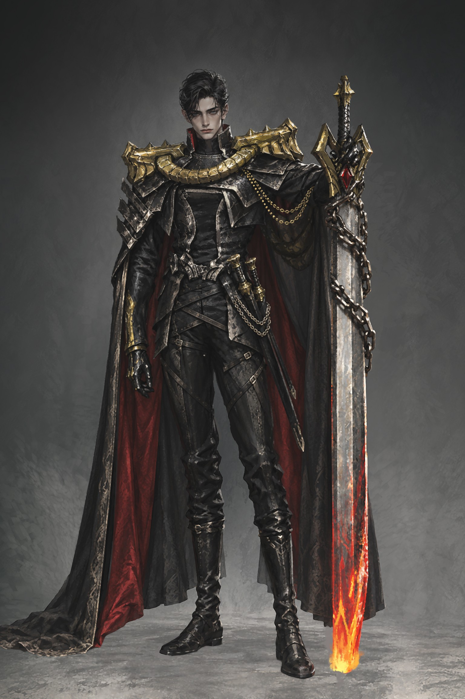
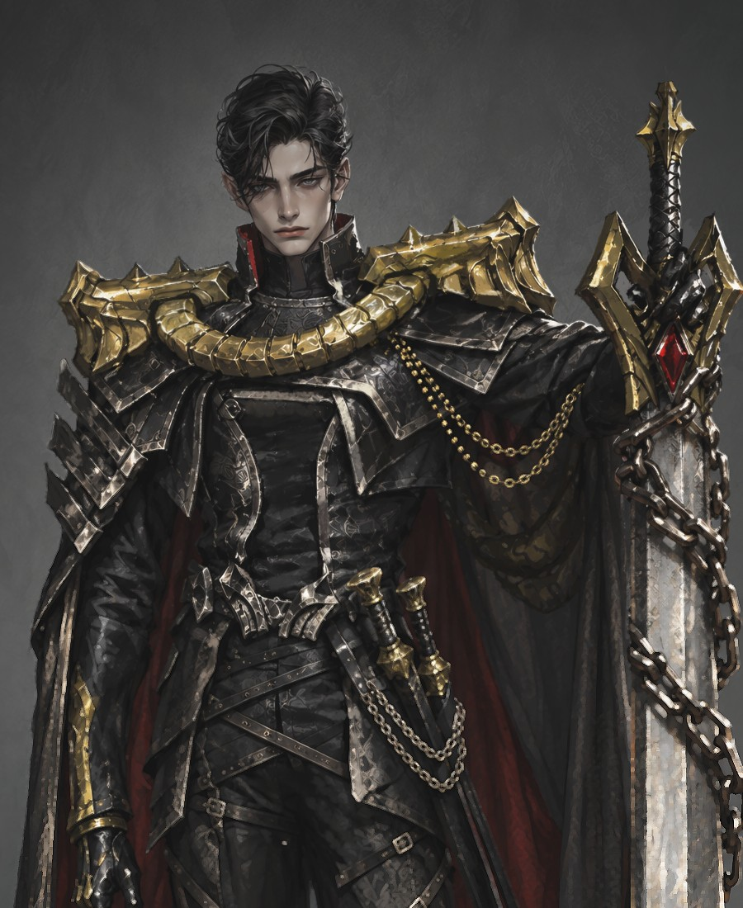
자신의 대검에 귀속된 늙지않는 퇴폐미 절대군주.
초안러프이미지 제작 -> AI 업스케일링 -> 최종리터칭
프로젝트 극초반 시안에서 리뉴얼 캐릭터 시안으로
육중폐황 아저씨에서
자신의 대검에 귀속된 늙지않는 퇴폐미 절대군주로.
리뉴얼 초안이 PD에게 통과된 뒤 프로젝트가 중단됐다.
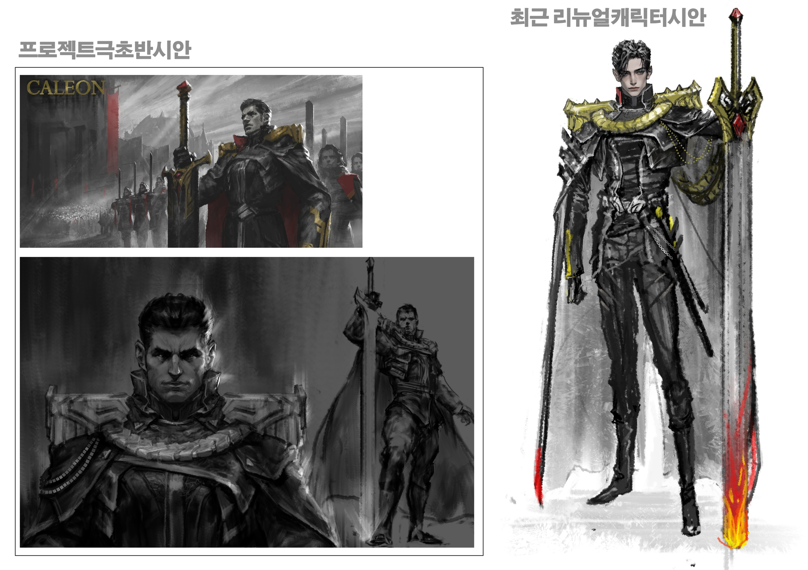
종족 특성을 인과로 정리하고, 그 키워드를 색과 형태로 옮겼다
2021년도 당시 각 종족특성 비주얼키워드 직접설정 -> 기획팀이 발전
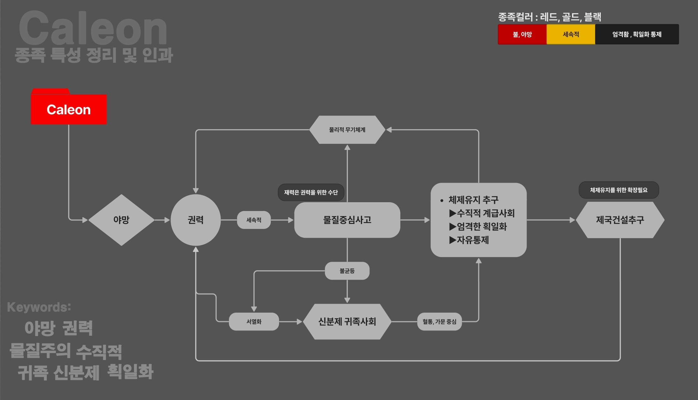
칼레온 종족 특성 정리 및 인과 도표. PD 설명에서 키워드를 추출해 정리
| 세속적 | 골드절제되고 미니멀한 어두운부위와 대조되는 화려한금장 |
| 야망 | 레드불, 야망 |
| 엄격한 획일화 자유통제 | 블랙엄격함, 획일화 통제. 미니멀 |
| 수직적 계급사회 | 금 견갑계급·권위 표시 |
| 혈통·가문 중심 | 가문 문장릭 블러드의 블러드 가문 문장 |
칼레온은 마르크스의 유물론적 세계관을 기반으로 비주얼설정을 잡았고 물질중심사고와 이성을 내세우며 통제와 획일성, 단절과 엄격함을 비주얼 키워드로 세움. 마르크스의 유물론이 오히려 획일성과 전체주의로 수렴하면서 소통의 단절과 체계와 효율만 내세우며 오히려 강한 신분제사회로 발전한 딜레마를 비대칭디자인으로 상징.
키워드마다 붙인 레퍼런스와 메모
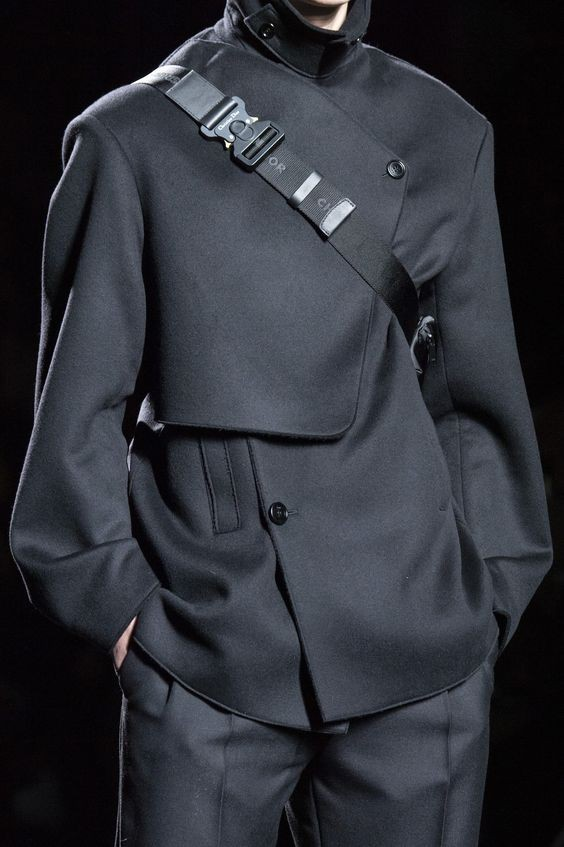
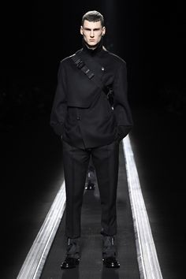
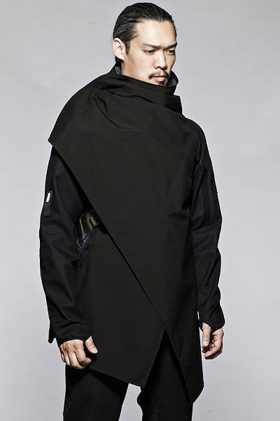
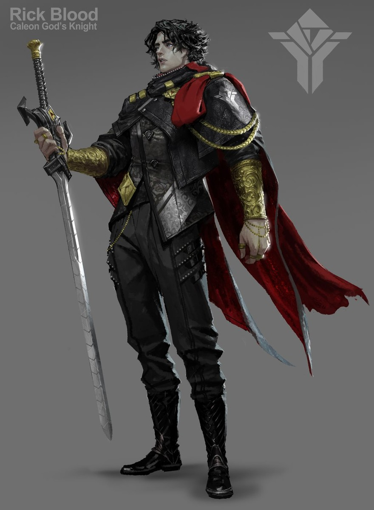
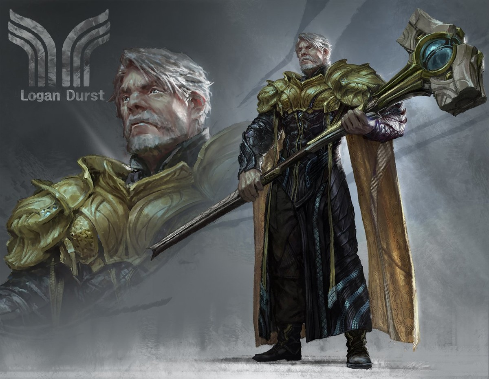
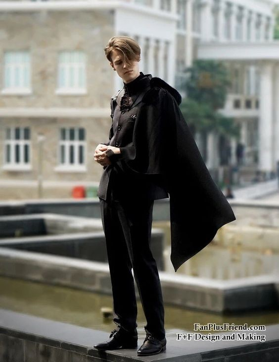
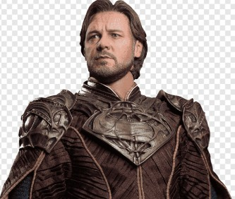
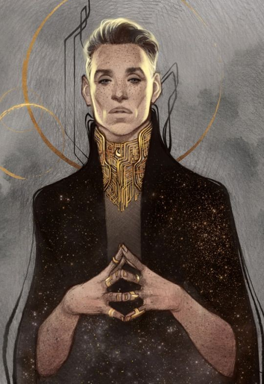
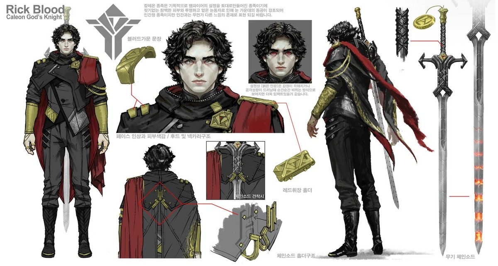
초안의 디자인 요소를 글로 정리
자신의 대검에 귀속된 늙지않는 퇴폐미 절대군주. 육중함 보다 날렵하고 예리하지만 엄청난 괴력을 갖고 있다는 설정으로 호리호리한 체형과 미형 얼굴 양옆으로 볼드하고 두툼한 대칭적 금갑견장이 얹혀있고 이를 크고 볼드한 금장 금속벨트로 연결됨. 멀리서 봤을때 긴 몸 양쪽에 대칭적 금장과 완만한 U 자형 금장벨트가 캐릭터라인이자 특징. 복식의 어두운부위는 칼레온 특유의 비대칭 사선형 겹침 양식.
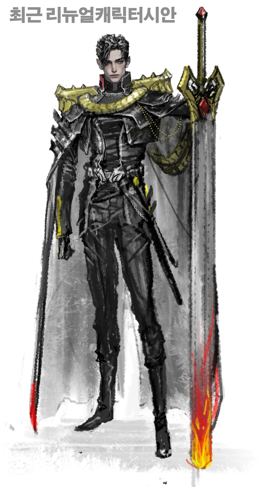
볼드하고 두툼하게, 몸 양옆에
견장과 견장을 잇는 크고 볼드한 금속 벨트
복식의 어두운 부위
끝은 불에 달군 붉은색
같은 디자인의 초안 러프와 완성본
초안의 실루엣, 대칭 금갑견장과 U자 금장벨트, 끝이 붉게 타는 대검을 유지했다.